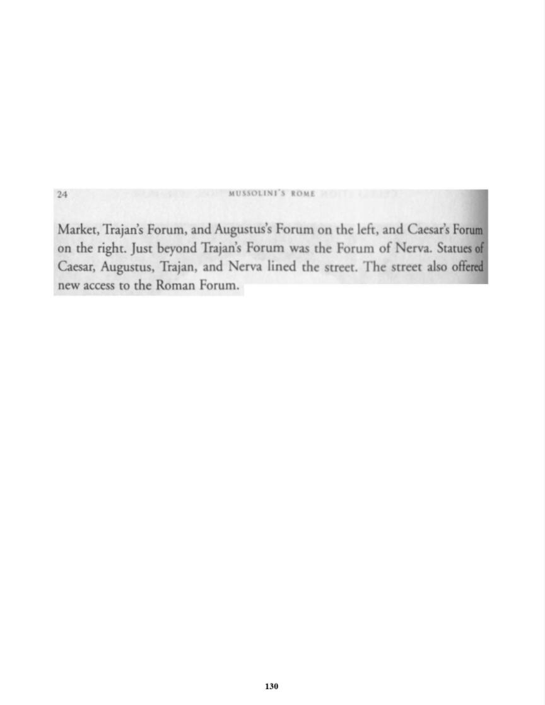

24
M
I
E
Market,
Trajan's
Forum,
and
Augus
,
rum
on th
on
the
right.
Just
beyond
Trajan'
Forum
th
Caesar,
Augustus,
Trajan,
and
erva
lined
the
new
access
to the
Roman
Forum.
130

Previous Page
Next Page